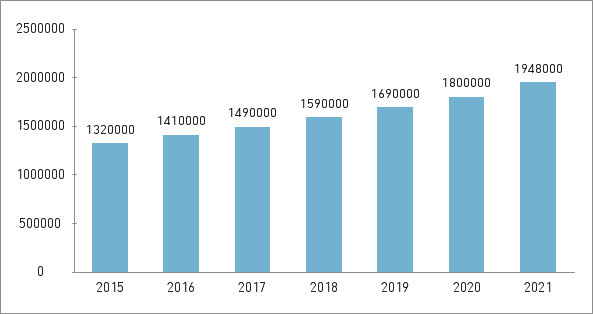

중국 가정집의대문에 한자 복을 거꾸로 븥히는것을 자주 목격할수있는데
복을 거꾸로 븥히면 집안으로 행운이 들어온다고 믿기때문이다.
요즘은 대문뿐만 아니라 신발에도 붙한다고 한다
<
아침을 꼭 챙겨먹는 문화가 있다.
중국의 일부민족을 제외하고 대략 80%은는 오전4시부터 식당문을 열러서 아침외식을 자주한다고 한다.
중국의 아침외식시장은 갈수록 규모가 커지고 있다.
<
차문화가 발달해 찬음료는 잘 마시지 않는다.
중국의 식문화는 기름에 튀긴 음식이 많은데, 그럼에도 중국에 비만률이 높지 않은 이유는 따뜻한 차를 마시는 문화 떄문이다.
중국은 찬음료는 몸에 않좋다고 생각해서 콜라도 실온에 꺼내놓고 먹는다고 한다.
<
2.무형문화재
경극
경극 또는 경희(京戱)는 중국 연극 가운데 하나로, 북경에서 육성된 연극이라는 의미이다.
서양의 고전극과는 본질이 다른데 각본의 선악보다는 배우 개인의 기예를 더 중요시한다
그래서 특수한 역할이라는 것이 정해져 배우 중심, 역할 중심으로 발전하고, 감상이나 비평의 대상도 중점이 거기에 두어진다. 그리고 여자는 참가를 하지못하기에 남자가 여장을 해서 여자역을 맡는다.
야오족의 판왕절
야오족은 중국의 소수민족중 하나로 그 민족의 여성은 머리를 절대로 자르지 않고 기른다고 한다.
이유는
3.유형문화재